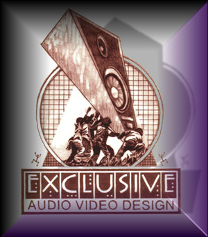

- technology -
Department of Energy Office of Scientific and Technical Information Energy Science and Technology Software Center P. . Department of Energy Energy Science and Technology Software Center The Energy Science and Technology Software Center (ESTSC) is the U. Department of Energy's (DOE) centralized software management facility. Operated by the DOE Office of Scientific and Technical Information (OSTI), the ESTSC licenses and distributes Federally funded scientific and technical software developed by the national laboratories, other facilities and DOE contractors.
 |
William McQueen EASI Conference Handouts Navigation Bar EASI is committed to following all Federal non-discrimination legislation. . EASI Homepage Home Courses Consulting Captioning Webcasts IT News EASI is the Premiere Provider of Online Training on Accessible Information Technology for Persons with Disabilities EASI's Featured Links Non-Computerized Science Labs and Assistive Technology Karen Milchus (Georgia Tech) Presentation made at the Accessing Higher Ground Conference at the U. William McQueen EASI Conference Handouts Navigation Bar EASI is committed to following all Federal non-discrimination legislation. .
Sun's Developer Technical Support Tech Notes Find out the solutions to common questions and issues faced by developers. . This guide serves as a follow-up to each JavaTM technology mentioned in the technical keynote presentation. announced the availability of Macromedia JRun 4, which uses JiniTM network technology to create an elegant, peer-based mechanism for services such as Enterprise JavaBeansTM technology to discover and collaborate with one another. We are redesigning the Sun developer sites for better usability.
|  |
Web site developed by Innovative Internet Marketing Solutions . . sales presentations - HB Communications - audio and video design, sales meeting technology Customer Service . Upcoming Events Research our on-line catalog to compare features and specs on presentation display equipment and accessories. Don't forget to check our Hot Deals page for great savings on "B" stock, demo, and inventory overstock equipment.
further information: http://www.ontechnology.org/
.